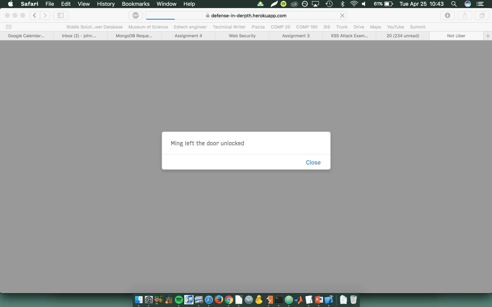
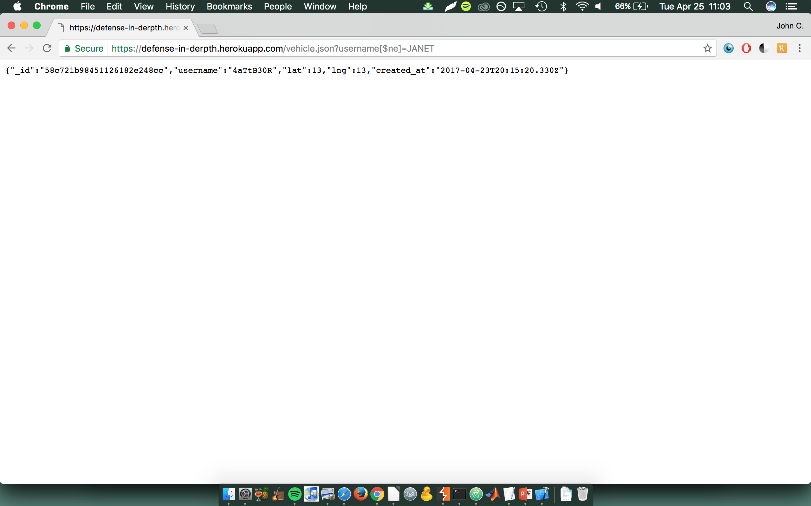
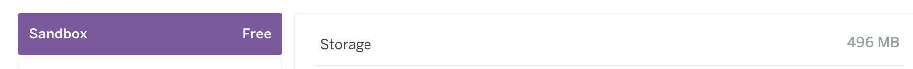

Security report: Ming Chow's black car service
Written by John C. Merfeld
Introduction:
NOTE: My original partner's code was throwing internal server errors when I tried to make requests to it, which is why I am using Ming Chow's app instead.
The product is a prototype for a ride-hailing app. Passengers can make requests to the server at which point their location is added to a database where vehicles can find them. I was hired to perform a security evaluation of the app and document ways in which malicious users could cause it to crash or reveal private information.
Methodology:
I used a combination of black box and white box testing. Much of my testing was conduted from the command line using the curl tool to send malicious requests. I also explored vulnerabilities in the source code itself.
Abstract:
Broadly speaking, the server does not do enough to validate user input before passing it through the system. It is possible to feed the app segements of malicious code that cause it to malfunction or display private information, either via how the webpage is displayed or by directly manipulating the database containing the information. Also, by knowing which database the owner is using, I determined a way to overwhelm and crash it with huge amounts of data.
Issues:
Issue 1 – Cross site scripting
- Location: POST route / home page
- Severity: high (can potentially disrupt the entire user experience of the site and/or redirect the user to a malicious site)
- Description and proof: I found this vulnerability by posting some JavaScript to the app that caused the following alert to appear:
- 
- Resolution: Converting angle brackets to some other encoded character would prevent script tags from being executed by the HTML on the home page
Issue 2 – NoSQL injection
- Location: GET route / vehicle.json page
- Severity: medium (displays private information, but not much about the user besides location is stored in the database, and the GET method itself is written so as to return at most one entry, even if many are requested)
- I added several vehicles to the database, then requested information in the form of a MongoDB command that would have returned all vehicles, even if I didn't know their username. This had limited effectiveness, because the GET method uses db.findOne() instead of db.find(), so it doesn't actually return every single driver – just the most recent one. This is demonstrated here (see the URL):
- 
- Resolution: Sanitize GET parameters. Specifically, stripping the MongoDB special characters from username inputs would prevent malicious users from manipulating the database.
Issue 3 – Overloading the Mongo database
- Location: POST route
- Severity: medium (can potentially crash the database, but user information would not be compromised)
- Description and proof: Admittedly, I was not able to actually test this vulnerability out (per Ming's reqeust), but by examining the source code, I knew the site used an mLab sandbox Mongo database. Then, by consulting the mLab site, I discovered the maximum amount of data that could be stored in the database. If a huge series of POST requests were made, the database could be filled and all new user functionality of the site would cease. Proof of concept illustrated here:
- 
- Resolution: Checking usernames to ensure they are not of problematic length would prevent a single user from bringing down the database. However, there is little that could be done to prevent a full-fledge DoS attack on the site (as is true of any limited-size database)
Conclusion:
Generally, the problems discovered here can mitigated by better data sanitation. A quick run through the code that properly validates the input would eliminate the first two problems I found above. Of course, the website is limited by the (free) tools it is built on, but the vulnerabilites to XSS and injection can be fixed fairly simply in this case.
References: